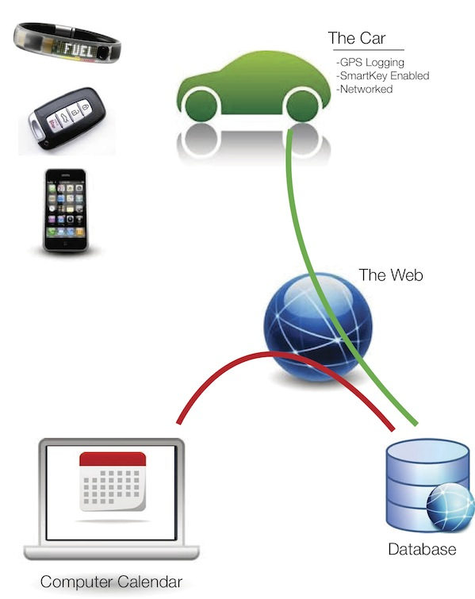

For each of our designs, we assume there is a backend database containing all the information about our users, their scheduled plans for the car, and data about the actual use of the car. We also assume there is some way to reliably control access to the car and record data about the different trips that users make with the car.
The database will handle the authentication of user identities when they interact with the system, controlling what records are visible. Our system needs to know which user is doing what. It needs to provide a central calendar describing the planned usage over time for the car and it needs to somehow maintain a log of car activity. There has to be some feature of our system that ensures that users can only take the car for themselves when permitted by the calendar.
We need to have a system built into the car for access control. One possible way to implement this is a realistic possibility for modern vehicles with radio control keys. Many new cars do not require the driver to insert a physical key, only to have a special wireless key in the vicinity of the car. At least 28 car manufacturers have some variety of proximity sensing keys, many with discrete buttons for door locks, while Toyota and others will automatically unlock doors and enable ignition by simply having the key in a pocket or handbag. An additional layer of lock and ignition control could be added to the car's electronic access system based on our calendar system.
For any trip, by each user, the car must also have some way to track the location, the route distances, the trip time, and (if possible) the fuel or power consumption of the car. In older cars, it may be possible to hack together a combination of GPS and a timer to gather data about the distances travelled and the time of possession for each user. In addition, there could be a small computer attached to the car emission control system in order to measure and calculate the fuel consumption or driving patterns.
An ODB-II port is a common feature built into the underside of the dashboard in many cars. Some driving enthusiasts have developed custom interfaces for this data port, and they use special control systems to adjust the engine performance settings. Many current model vehicles include Bluetooth connectivity for smart phone integration into the stereo system for streaming audio and telephone calls over the car speakers. For the purposes of our designs, we assume that similar communication protocols could be used to record geographic trip data, elapsed time, and the car's energy consumption measurements and then relay this to our database.
Each of our designs interacts with this backend system in different ways.